FORECAST_AND_SARIMA หน้า 14–52 · คลิป Class 8 (1:24–2:13, เขียนมือ), Class 9-1 (32:36, เขียนกระดาน), Class 9-2 (0:00–0:31) · ควิซ 7
ข้อมูลไฟฟ้าใน Lesson 7 หลัง log และ difference แล้วยังมี ACF สูงที่ lag 12, 24, 36 ARIMA ธรรมดาจัดการ pattern ที่ "กระโดด" ทีละ 12 ไม่ได้ บทนี้เพิ่มส่วน seasonal เข้าไป อาจารย์สรุปหลักคิดไว้ประโยคเดียว: seasonal คือ "เหมือนเดิม" แต่ "กระโดด ... ห่างกัน s ไม่ได้ห่างกัน 1" (Class 8, 1:28:40)
| หัวข้อ | เนื้อหา | สไลด์ FORECAST_AND_SARIMA |
|---|---|---|
| 1 | ทำไมต้องมี seasonal ARIMA | 14–16 |
| 2 | Seasonal MA(Q)ₛ | 17–21 |
| 3 | Seasonal AR(P)ₛ | 22–26 |
| 4 | ARMA(P,Q)ₛ และตาราง ACF/PACF (ควิซ 7) | 27–29, 52 |
| 5 | Multiplicative ARMA(p,q)×(P,Q)ₛ | 30–32 |
| 6 | Full SARIMA และ seasonal differencing | — (Class 9-1) |
| 7 | ข้อมูลจริง: Denver boardings | 33–41 |
| 8 | ข้อมูลจริง: US milk production | 42–51 |
| 9 | แบบฝึกห้าแบบ | — |
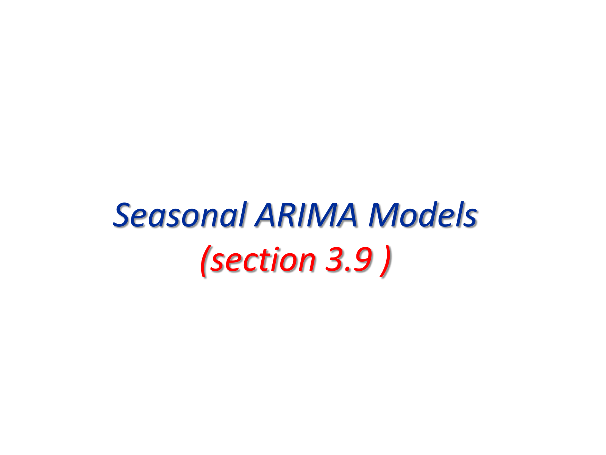
ส่วนนี้คือ Section 3.9 ของหนังสือ อาจารย์สอนครั้งแรกใน Class 8 โดย "ลืมเอาสไลด์มา" จึงเขียนมือทั้งหมด แล้วทวนอีกครั้งใน Class 9-1 บนกระดาน และใช้สไลด์ชุดนี้กับข้อมูลจริงใน Class 9-2
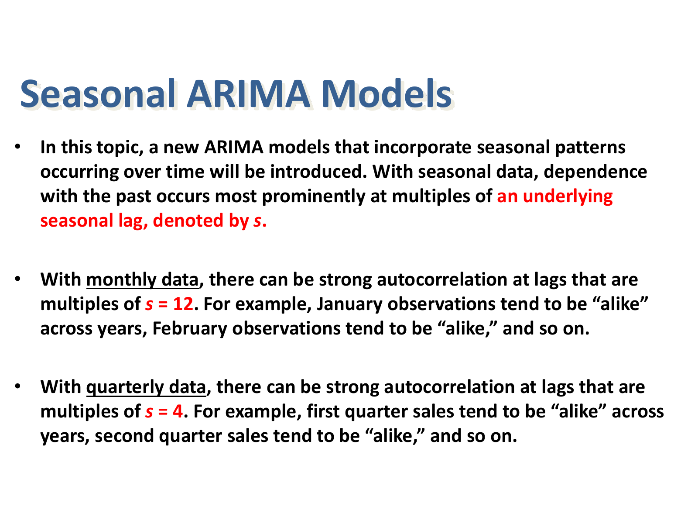
ข้อมูลรายเดือนมักมี autocorrelation สูงที่ lag เป็นพหุคูณของ s = 12 เพราะ "January observations tend to be alike across years" ตัวอย่าง: ยอดขายเดือนธันวาคมปีนี้ใกล้กับธันวาคมปีก่อนมากกว่าพฤศจิกายนปีนี้ ข้อมูลรายไตรมาสใช้ s = 4 อาจารย์เรียก s ว่า seasonal lag หรือ seasonal index (Class 8, 1:30:48)
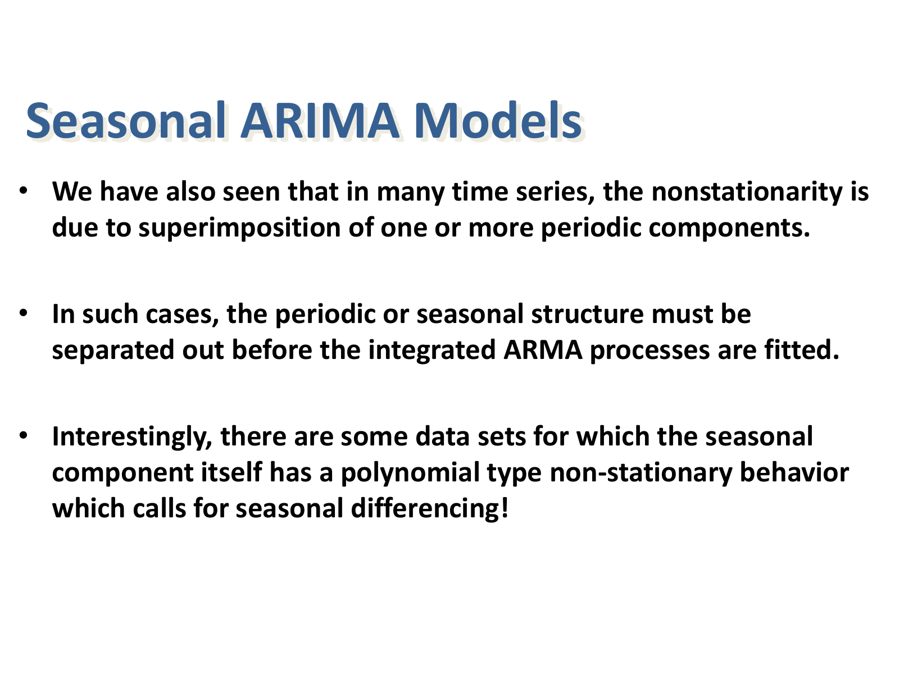
สไลด์ชี้ว่าความไม่นิ่งหลายครั้งเกิดจาก periodic component ซ้อนอยู่ ต้องแยกส่วน seasonal ออกก่อนฟิต ARIMA และบางข้อมูลส่วน seasonal เองก็มีลักษณะไม่นิ่งแบบพหุนาม ต้องใช้ seasonal differencing \(\nabla_sX_t=X_t-X_{t-s}=(1-B^s)X_t\) เช่น \(\nabla_{12}\) ของมกราคม 2005 คือมกราคม 2005 ลบมกราคม 2004 ซึ่งตัดผลของเดือนที่ซ้ำทุกปีออก
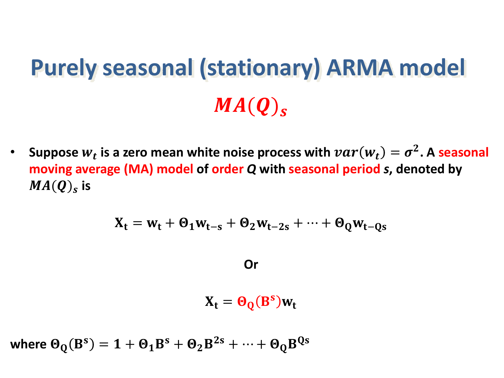
MA(Q)ₛ คือ \(X_t=w_t+\Theta_1w_{t-s}+\Theta_2w_{t-2s}+\dots+\Theta_Qw_{t-Qs}\) อาจารย์อธิบายว่า Θ ใหญ่ "คือเหมือนกัน" กับ θ แค่ใช้ตัวใหญ่เพื่อแยก seasonal กับ non-seasonal Q ใหญ่คือจำนวน Θ และ "มันกระโดด ... ห่างกัน s ไม่ได้ห่างกัน 1" (Class 8, 1:28:04–1:30:48) เขียนด้วย B ได้ \(\Theta_Q(B^s)=1+\Theta_1B^s+\dots+\Theta_QB^{Qs}\) เช่น MA(2)₄ คือ \(X_t=(1+\Theta_1B^4+\Theta_2B^8)w_t\)
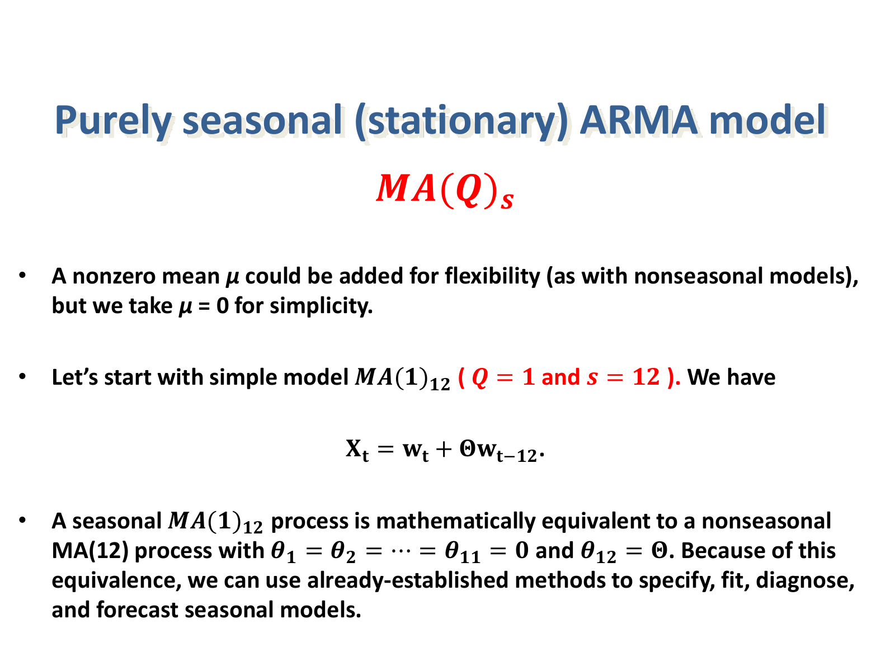
ตัวอย่างที่ง่ายที่สุด \(X_t=w_t+\Theta w_{t-12}\) เทียบกับ MA(1) \(X_t=w_t+\theta w_{t-1}\) "สิ่งที่คุณต้องระวังจริงคือ w_{t−12} ... ไม่ใช่ t−1" (Class 8, 1:33:39) สไลด์ชี้ว่า MA(1)₁₂ คือ MA(12) ที่ θ₁ ถึง θ₁₁ เป็นศูนย์และ θ₁₂ = Θ จึงใช้เครื่องมือเดิมทั้งหมดได้ ใน R จึง simulate ด้วย ma = c(rep(0,11), 0.9) (Class 9-1, 0:05:15)
\(\mathrm{Var}(w_t+\Theta w_{t-12})=\sigma^2(1+\Theta^2)\)
เช่น \(\mathrm{Cov}(w_t+\Theta w_{t-12},\,w_{t+1}+\Theta w_{t-11})\) ดัชนี \(t, t-12\) กับ \(t+1, t-11\) "ไม่ชนกันเลย" จึงเป็น 0
\(\mathrm{Cov}(w_t+\Theta w_{t-12},\,w_{t+12}+\Theta w_t)\) ชนกันที่ \(w_t\) ได้ \(\Theta\sigma^2\)
\(\rho_{12}=\Theta/(1+\Theta^2)\) และ ρ อื่นทุกตัวเป็น 0 เทียบกับ MA(1): \(\rho_1=\theta/(1+\theta^2)\)
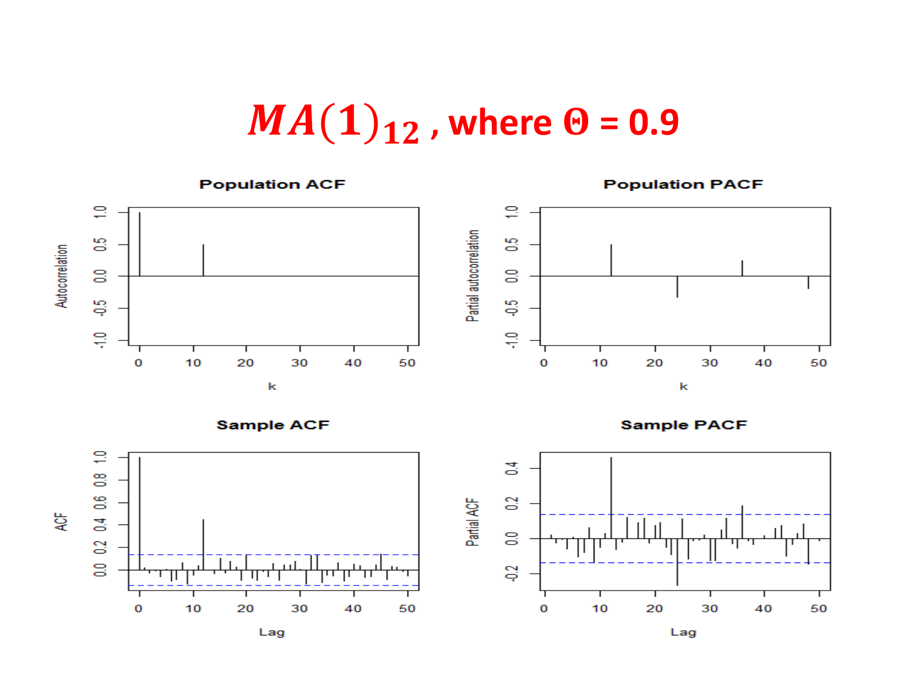
population ACF มีแท่งเดียวที่ lag 12 = 0.497 ส่วน population PACF มีค่าที่ lag 12, 24, 36, 48 = 0.497, −0.328, 0.243, −0.191 สลับเครื่องหมายและลดลง ขนาดเท่ากับ PACF ของ MA(1) θ = −0.9 ใน Lesson 6 (0.497, 0.328, 0.243, 0.191) ต่างที่เครื่องหมายสลับบวกลบเพราะ Θ เป็นบวก และย้ายจาก lag 1, 2, 3, 4 ไป 12, 24, 36, 48 sample จาก arima.sim(..., n = 200) มีรูปแบบเดียวกันแต่มีแท่งเล็ก ๆ ที่ lag อื่นด้วย
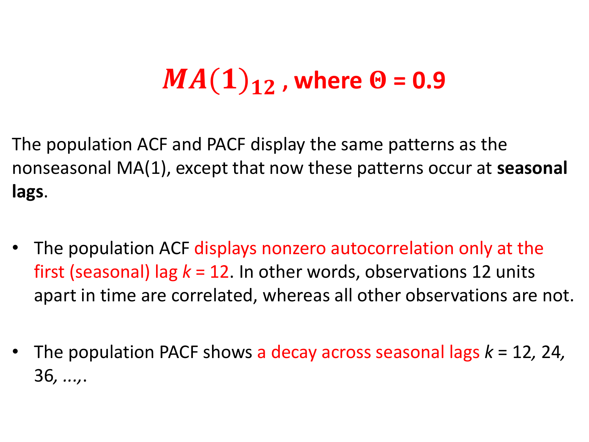
ข้อสรุปบนสไลด์: population ACF และ PACF มีรูปแบบเดียวกับ MA(1) แต่เกิดที่ seasonal lag ACF ไม่เป็นศูนย์เฉพาะ lag 12 แปลว่าค่าที่ห่างกัน 12 หน่วยสัมพันธ์กัน ค่าอื่นไม่สัมพันธ์ และ PACF ลดลงตาม lag 12, 24, 36, …
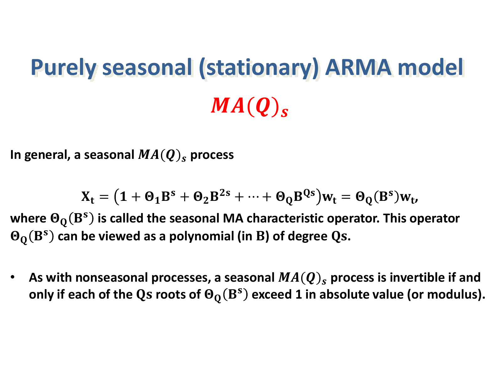
\(\Theta_Q(B^s)\) เรียกว่า seasonal MA characteristic operator เป็นพหุนามดีกรี Qs MA(Q)ₛ invertible เมื่อรากทั้ง Qs ตัวมีค่าสัมบูรณ์หรือ modulus เกิน 1 เช่น MA(1)₁₂: \(1+\Theta x^{12}=0\) ได้ \(|x|^{12}=1/|\Theta|\) รากทุกตัวมี modulus \(|\Theta|^{-1/12}\) ซึ่งเกิน 1 เมื่อ |Θ| < 1 เงื่อนไขจึงเหมือน MA(1)
MA(2): ACF ไม่เป็น 0 ที่ lag 1, 2 · MA(2)₁₂: ไม่เป็น 0 ที่ 12, 24 · MA(4)₅: ไม่เป็น 0 ที่ 5, 10, 15, 20 (สี่ตัว) · MA(5)₈: ที่ 8, 16, 24, 32, 40 (Class 8, 2:04:32) วิธีคิดคือ lag ที่ไม่เป็นศูนย์ของ MA(Q)ₛ คือ s, 2s, …, Qs
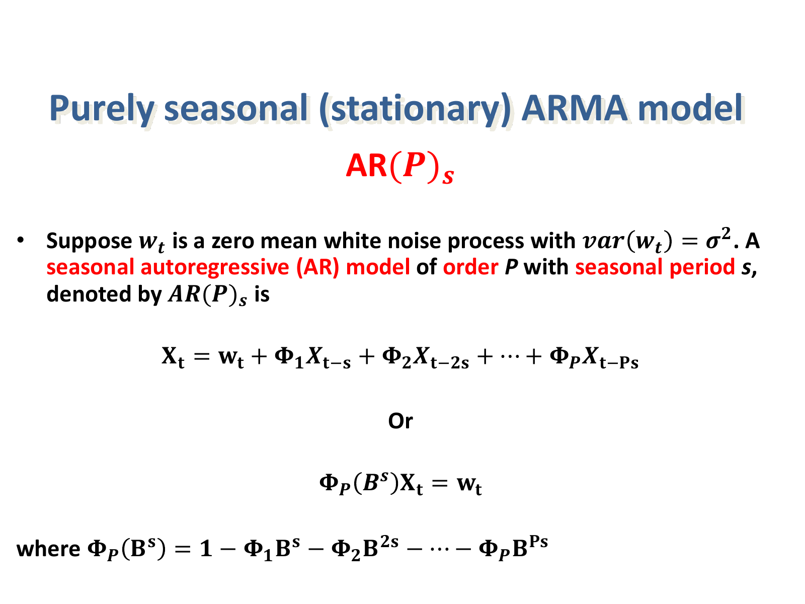
อาจารย์ให้นักศึกษาเดา AR(P)ₛ เอง "ขนาดไม่เรียนยังเดาถูก" (Class 8, 1:55:03): \(X_t=\Phi_1X_{t-s}+\Phi_2X_{t-2s}+\dots+\Phi_PX_{t-Ps}+w_t\) Φ ใหญ่มี P ตัว และ \(\Phi_P(B^s)=1-\Phi_1B^s-\dots-\Phi_PB^{Ps}\) "w_t คูณ Bˢ กลายเป็น t − s" (Class 8, 2:09:39) เช่น AR(2)₁₂: \(X_t=\Phi_1X_{t-12}+\Phi_2X_{t-24}+w_t\) หรือ \((1-\Phi_1B^{12}-\Phi_2B^{24})X_t=w_t\)
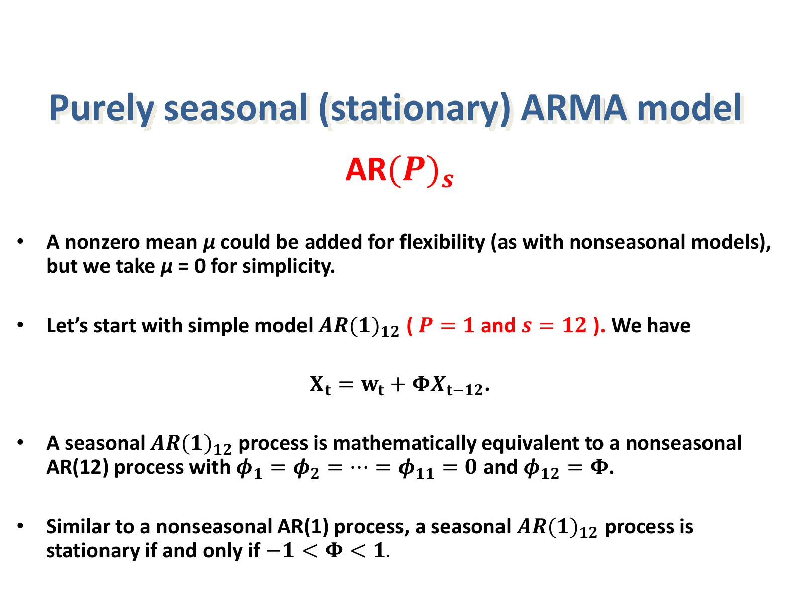
AR(1)₁₂ \(X_t=\Phi X_{t-12}+w_t\) คือ AR(12) ที่ φ₁ ถึง φ₁₁ เป็นศูนย์และ φ₁₂ = Φ เหมือน AR(1) ตรงที่นิ่งก็ต่อเมื่อ −1 < Φ < 1 ความหมาย: ยอดขายเดือนนี้ขึ้นกับเดือนเดียวกันของปีก่อน ไม่ขึ้นกับเดือนก่อนหน้า
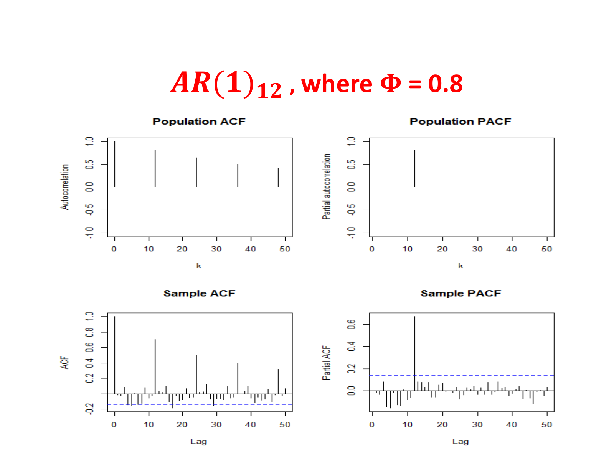
population ACF มีค่าที่ lag 12, 24, 36, 48 = 0.8, 0.64, 0.512, 0.410 คือ \(\Phi^{h/12}\) "ในหนังสือก็จะเป็น Φ^{h/12}" (Class 9-1, 0:11:24) และ lag อื่นเป็นศูนย์ เช่น lag 1 = 0 population PACF มีแท่งเดียวที่ lag 12 = 0.8 sample ACF จาก n = 200 ลดลงตาม lag 12, 24, 36 ชัดเจน
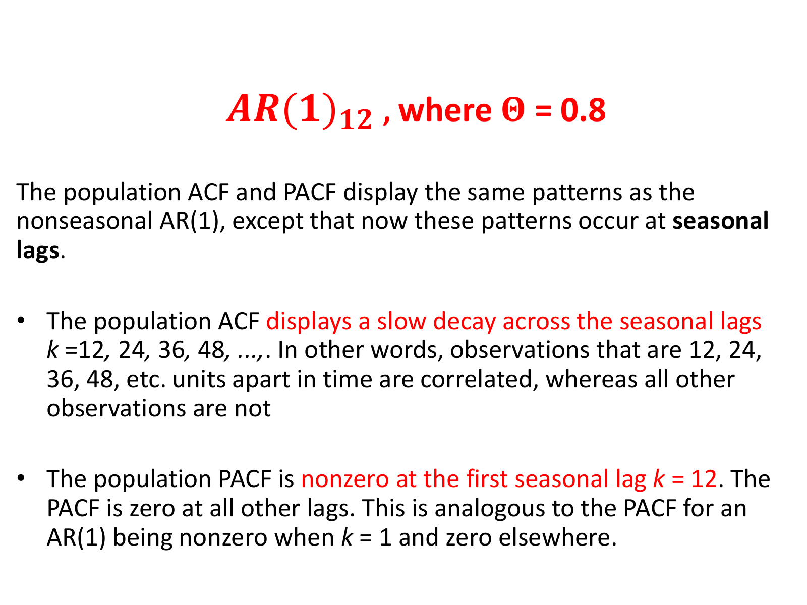
ข้อสรุป: ACF ลดลงช้าตาม seasonal lag 12, 24, 36, 48 ส่วน PACF ไม่เป็นศูนย์ที่ lag 12 แล้วเป็นศูนย์ เป็นรูปแบบเดียวกับ AR(1) แค่ย้ายตำแหน่ง ข้อสังเกต: หัวสไลด์หน้านี้พิมพ์ว่า Θ = 0.8 แต่ควรเป็น Φ = 0.8 ตามหน้าก่อน
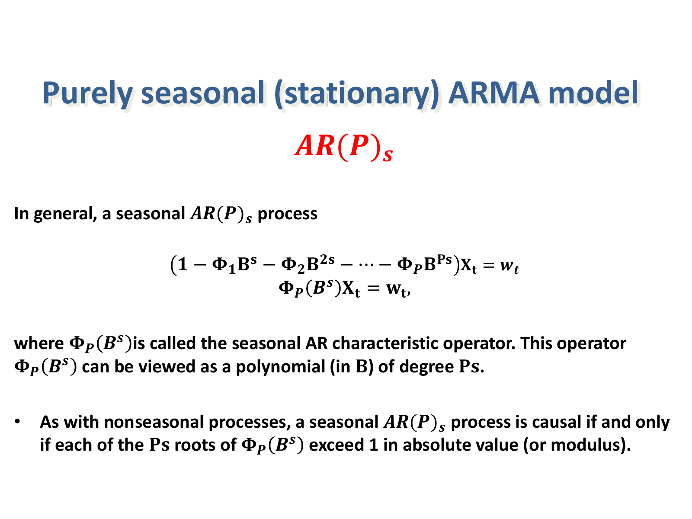
\(\Phi_P(B^s)\) เรียกว่า seasonal AR characteristic operator เป็นพหุนามดีกรี Ps AR(P)ₛ causal (นิ่ง) เมื่อรากทั้ง Ps ตัวมีค่าสัมบูรณ์หรือ modulus เกิน 1 แบบฝึกจากอาจารย์: AR(4)₄ มี PACF ไม่เป็นศูนย์ที่ 4, 8, 12, 16 แล้วเป็นศูนย์ และ ACF tail off ที่ 4, 8, 12, 16, 20, 24, … (Class 8, 2:04:32–2:06:19)
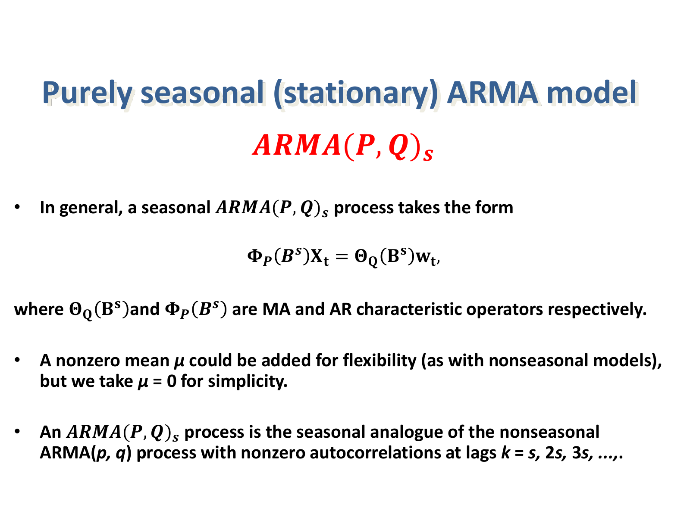
รวมสองส่วนเป็น \(\Phi_P(B^s)X_t=\Theta_Q(B^s)w_t\) เรียกว่า SARMA(P,Q)ₛ (Class 8, 2:10:39) เป็นคู่ของ ARMA(p,q) ที่ autocorrelation ไม่เป็นศูนย์เฉพาะที่ lag s, 2s, 3s, … "สิ่งที่ต้องระวังคือ s: t−1 กลายเป็น t−s, t−2 กลายเป็น t−2s, B กลายเป็น Bˢ" (Class 8, 2:12:03)
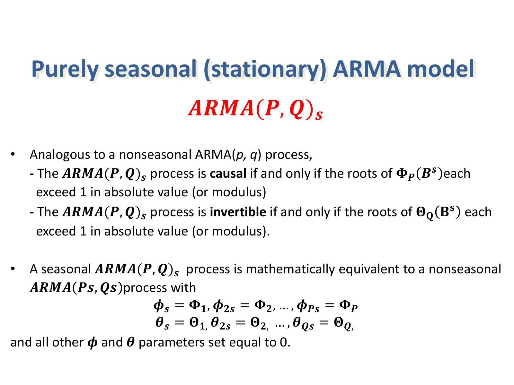
causal เมื่อรากของ \(\Phi_P(B^s)\) เกิน 1 ทุกตัว invertible เมื่อรากของ \(\Theta_Q(B^s)\) เกิน 1 ทุกตัว และ ARMA(P,Q)ₛ เทียบเท่า ARMA(Ps, Qs) ธรรมดาที่ \(\phi_s=\Phi_1,\phi_{2s}=\Phi_2,\dots\) และ \(\theta_s=\Theta_1,\dots\) ส่วน φ, θ อื่นเป็นศูนย์ เช่น ARMA(1,1)₄ คือ ARMA(4,4) ที่มีแค่ φ₄ กับ θ₄
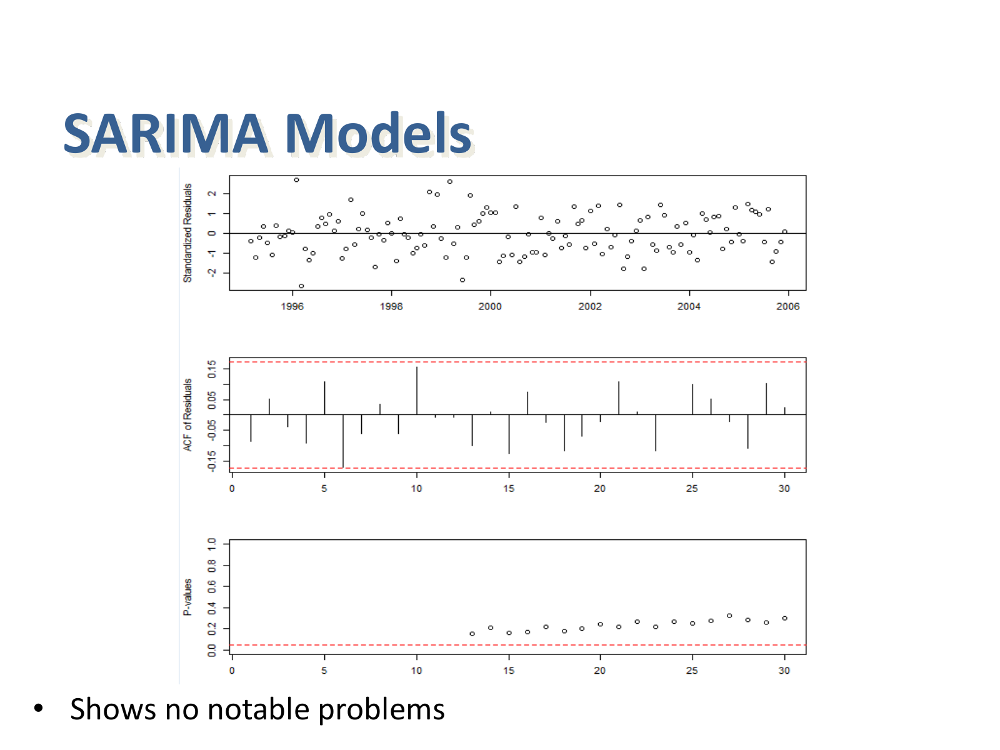
หน้าสุดท้ายของไฟล์ทวนเรื่องเดียวกันอีกครั้ง พร้อมเขียนให้ชัดว่า ARMA(P,Q)ₛ เทียบเท่า ARMA(Ps,Qs) ที่ \(\phi_s=\Phi_1,\phi_{2s}=\Phi_2,\dots,\phi_{Ps}=\Phi_P\) และ \(\theta_s=\Theta_1,\dots,\theta_{Qs}=\Theta_Q\) ส่วนที่เหลือเป็นศูนย์ ตัวอย่าง AR(2)₃ คือ AR(6) ที่มีแค่ φ₃ = Φ₁ และ φ₆ = Φ₂ ซึ่งใช้ใน R เป็น ar = c(0,0,Φ1,0,0,Φ2)
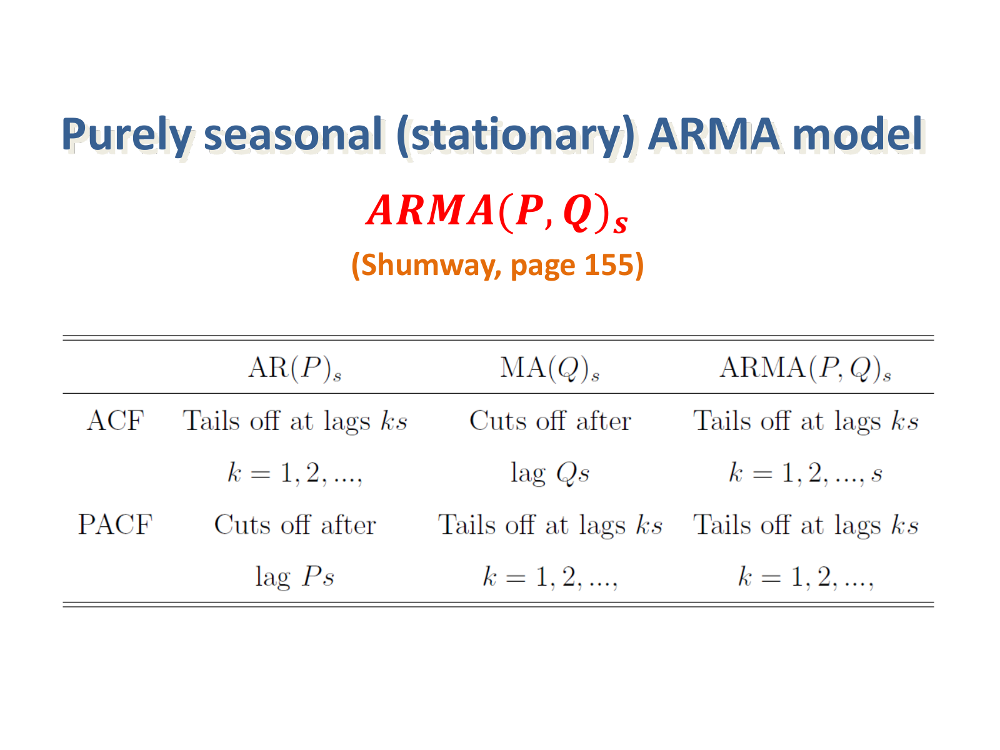
ตารางนี้คือควิซ 7 อาจารย์เขียนบนกระดานใน Class 9-1 (0:12:28–0:15:46)
| AR(P)ₛ | MA(Q)ₛ | ARMA(P,Q)ₛ | |
|---|---|---|---|
| ACF | tail off ที่ lag ks, k = 1, 2, … | ตัดหลัง lag Qs (ไม่เป็นศูนย์ที่ s, 2s, …, Qs) | tail off ที่ lag ks |
| PACF | ตัดหลัง lag Ps (ไม่เป็นศูนย์ที่ s, 2s, …, Ps) | tail off ที่ lag ks | tail off ที่ lag ks |
lag ที่ไม่ใช่พหุคูณของ s เป็นศูนย์ทั้งหมดในโมเดล pure seasonal tail off อาจลงแบบบวกทั้งหมดหรือสลับบวกลบก็ได้ (Class 9-1, 0:15:01) อาจารย์ย้ำตารางเทียบ non-seasonal กับ seasonal ไว้ใน Class 8: MA(q) ไม่เป็นศูนย์ที่ 1, …, q ส่วน MA(Q)ₛ ไม่เป็นศูนย์ที่ s, …, Qs และ PACF ของ MA(Q)ₛ "tail off ที่ s, 2s, 3s, … กระจายห่างกัน s" (Class 8, 1:51:14)
\(X_t=\Phi_1X_{t-3}+\Phi_2X_{t-6}+w_t\) ACF: ไม่เป็นศูนย์เฉพาะ lag 3, 6, 9, 12, … และค่อย ๆ ลด (tail off) lag อื่นเป็นศูนย์ PACF: ไม่เป็นศูนย์ที่ lag 3 และ 6 แล้วเป็นศูนย์หลัง lag 6 ตัวอย่าง Φ = (0.5, 0.3): ACF ที่ 3, 6, 9, 12 = 0.714, 0.657, 0.543, 0.469 และ PACF ที่ 3, 6, 9 = 0.714, 0.3, 0
ACF tail off ที่ lag 2, 4, 6, 8, … PACF ไม่เป็นศูนย์ที่ lag 2, 4, 6, 8, 10 แล้วตัดหลัง lag 10 lag คี่เป็นศูนย์ทั้งหมด
ACF ไม่เป็นศูนย์ที่ lag 4 และ 8 แล้วตัดหลัง lag 8 PACF tail off ที่ lag 4, 8, 12, 16, …
ACF ไม่เป็นศูนย์ที่ lag 2, 4, 6, 8 แล้วตัดหลัง lag 8 PACF tail off ที่ lag 2, 4, 6, 8, 10, …
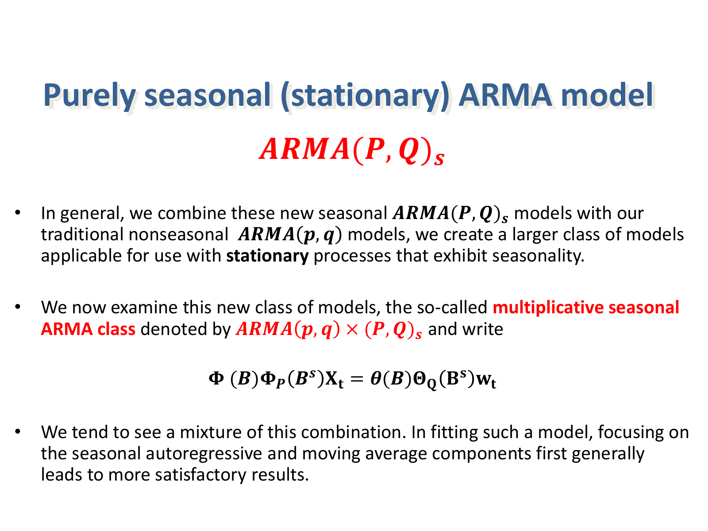
ข้อมูลจริงมักมีทั้งความสัมพันธ์ระยะสั้น (lag 1, 2) และระยะ seasonal (lag 12) จึงคูณพหุนามสองชุดเข้าด้วยกัน: \(\phi(B)\Phi_P(B^s)X_t=\theta(B)\Theta_Q(B^s)w_t\) เรียกว่า ARMA(p,q)×(P,Q)ₛ ใน R เขียน order = c(p,0,q), seasonal = list(order = c(P,0,Q), period = s) อาจารย์ให้แปลงชื่อให้เป็น: MA(1)×MA(1)₁₂ = ARIMA(0,0,1)×(0,0,1)₁₂ และ MA(1)×AR(1)₁₂ = ARIMA(0,0,1)×(1,0,0)₁₂ (Class 9-1, 0:16:21, 0:24:06)
\(X_t=(1+\theta B)(1+\Theta B^{12})w_t=(1+\theta B+\Theta B^{12}+\theta\Theta B^{13})w_t\) จึงเป็น MA(13) ที่มีแค่ θ₁ = θ, θ₁₂ = Θ, θ₁₃ = θΘ
\(\sigma^2(1+\theta^2+\Theta^2+\theta^2\Theta^2)=\sigma^2(1+\theta^2)(1+\Theta^2)\)
จับคู่สัมประสิทธิ์ (1, θ, Θ, θΘ ที่ตำแหน่ง 0, 1, 12, 13) ที่ห่างกัน h: h = 1 ได้ θ + ΘθΘ = θ(1 + Θ²); h = 11 ได้ θ·Θ; h = 12 ได้ Θ + θ·θΘ = Θ(1 + θ²); h = 13 ได้ θΘ
\(\rho_1=\dfrac{\theta}{1+\theta^2}\), \(\rho_{12}=\dfrac{\Theta}{1+\Theta^2}\), \(\rho_{11}=\rho_{13}=\dfrac{\theta\Theta}{(1+\theta^2)(1+\Theta^2)}\) lag อื่นเป็นศูนย์
θ = −0.5, Θ = −0.9: ρ₁ = −0.4, ρ₁₂ = −0.497, ρ₁₁ = ρ₁₃ = 0.45/(1.25 × 1.81) = 0.199 ตรงกับ ARMAacf(ma = c(-0.5, rep(0,10), -0.9, 0.45))
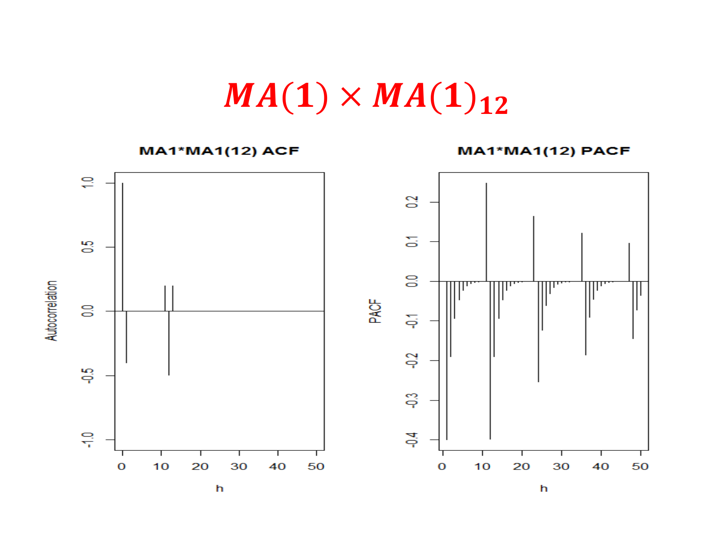
ACF มีแท่งลบที่ lag 1 (−0.4), แท่งลบใหญ่ที่ lag 12 (−0.497) และแท่งบวกเล็กสองแท่งที่ lag 11, 13 (0.199) แล้วเป็นศูนย์ทั้งหมดหลัง lag 13 PACF ไม่ตัด มีค่ารอบ lag 12, 24, 36, 48 ที่ค่อย ๆ เล็กลง ตามตาราง: ACF ของ MA ตัด ส่วน PACF tail off
\((1-\Phi B^{12})X_t=(1+\theta B)w_t\) จึงได้ \(X_t=\Phi X_{t-12}+w_t+\theta w_{t-1}\)
lag 1 = −0.4 (จาก MA(1)), lag 12, 24, 36 = 0.9, 0.81, 0.729 (Φ, Φ², Φ³ จาก AR(1)₁₂) และ lag 11, 13 = −0.36, lag 23, 25 = −0.324
−0.36 = 0.9 × (−0.4) และ −0.324 = 0.81 × (−0.4) คือ ρ₁ คูณด้วย Φ^k ข้าง lag 12k ทุกตัว
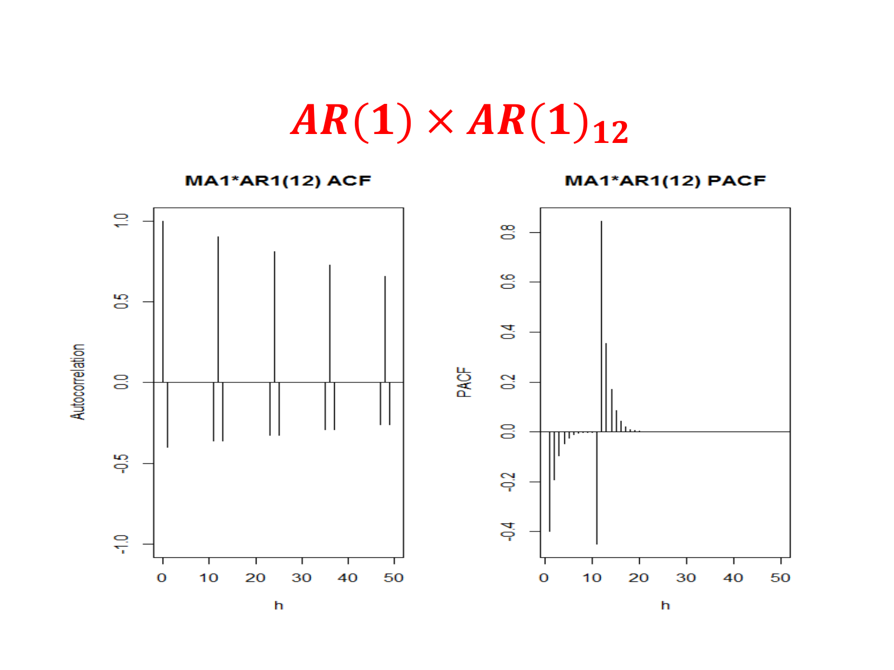
ตัวอย่างบนสไลด์คือ AR(1)×AR(1)₁₂ ACF มีแท่งใหญ่ที่ lag 12, 24, 36, 48 ลดลงช้า และมีแท่งลบรอบ ๆ แต่ละ lag seasonal เพราะ φ ของส่วน non-seasonal ติดลบ ส่วน PACF มีแท่งลบช่วง lag ต้น ๆ แท่งบวกใหญ่ที่ lag 12 และแท่งลบที่ lag 13 แล้วเกือบเป็นศูนย์ ตามทฤษฎี PACF ต้องเป็นศูนย์หลัง lag 13 เพราะ \((1-\phi B)(1-\Phi B^{12})=1-\phi B-\Phi B^{12}+\phi\Phi B^{13}\) คือ AR(13) ที่มีพจน์ที่ lag 1, 12, 13 เท่านั้น เป็นรูปแบบกลับด้านของ MA×MA
Class 9-1 อาจารย์เขียนโมเดลเต็มบนกระดาน "มันรวมทุกอย่างเลย" (0:00:28)
\(\phi(B)\,\Phi_P(B^s)\,\nabla^d\,\nabla_s^D\,X_t=\theta(B)\,\Theta_Q(B^s)\,w_t\)
| ส่วน | รูป | ความหมาย |
|---|---|---|
| non-seasonal AR | \(1-\phi_1B-\dots-\phi_pB^p\) | p เล็ก = จำนวน φ |
| seasonal AR | \(1-\Phi_1B^s-\dots-\Phi_PB^{Ps}\) | P ใหญ่ = จำนวน Φ |
| non-seasonal differencing | \((1-B)^d\) | d เล็ก จัดการ trend |
| seasonal differencing | \((1-B^s)^D\) | D ใหญ่ จัดการ seasonal ที่ไม่นิ่ง |
| non-seasonal MA | \(1+\theta_1B+\dots+\theta_qB^q\) | q เล็ก = จำนวน θ |
| seasonal MA | \(1+\Theta_1B^s+\dots+\Theta_QB^{Qs}\) | Q ใหญ่ = จำนวน Θ |
เขียนย่อเป็น ARIMA(p,d,q)×(P,D,Q)ₛ ถ้า d = D = 0 เรียก SARMA ถ้ามี differencing เรียก SARIMA "ตัวนี้จะ cover ทุกอย่างของ Box-Jenkins" ไม่มี seasonal ก็ตัดออก (Class 9-1, 0:00:28–0:04:17) อาจารย์เตือนว่าบางคนลืมใส่ s "ต้องใส่ S ตัวนี้ด้วย" (Class 9-1, 0:29:43)
\((1-B)(1-B^{12})X_t=(1+\theta B)(1+\Theta B^{12})w_t\)
\((1-B-B^{12}+B^{13})X_t=X_t-X_{t-1}-X_{t-12}+X_{t-13}\)
\(w_t+\theta w_{t-1}+\Theta w_{t-12}+\theta\Theta w_{t-13}\)
\((X_t-X_{t-12})-(X_{t-1}-X_{t-13})\) คือ "การเปลี่ยนแปลงจากปีก่อน" ของเดือนนี้ ลบด้วยของเดือนที่แล้ว
Class 9-2 อาจารย์ทวน multiplicative ด้วย simulation ก่อน แล้วเข้าข้อมูลจริงสองชุด "โมเดลที่เราคิดในใจจากการดูกราฟเฉย ๆ" แล้วตรวจสอบ (Class 9-2, 0:04:43)
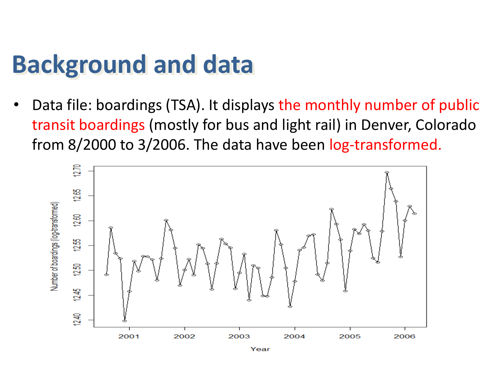
boardings จาก package TSA คือจำนวนผู้โดยสารขนส่งสาธารณะรายเดือนในเดนเวอร์ (ส่วนใหญ่รถบัสและ light rail) สิงหาคม 2000 ถึงมีนาคม 2006 รวม 68 เดือน ข้อมูลถูก log มาแล้ว "อย่าลืมนะครับ โมเดลนิสิตตอนนี้เป็น log X_t" ข้อมูลเดิมน่าจะมีปัญหา non-constant variance (Class 9-2, 0:07:22)
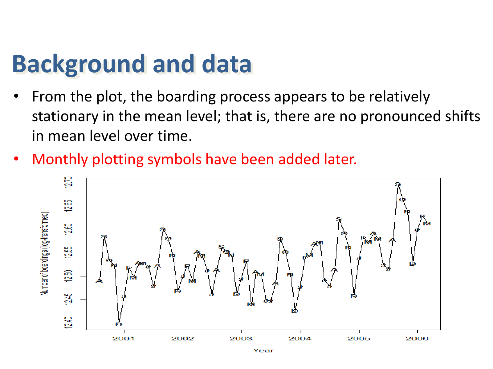
ระดับเฉลี่ยค่อนข้างคงที่ราว 12.5 (log scale) ไม่มีการเลื่อนระดับชัดเจน จึงไม่ต้อง difference ตัวอักษรเดือนที่ใส่ด้วย points(..., pch = as.vector(season(boardings))) ช่วยให้เห็นว่าเดือนเดียวกันมักอยู่ระดับใกล้กันทุกปี
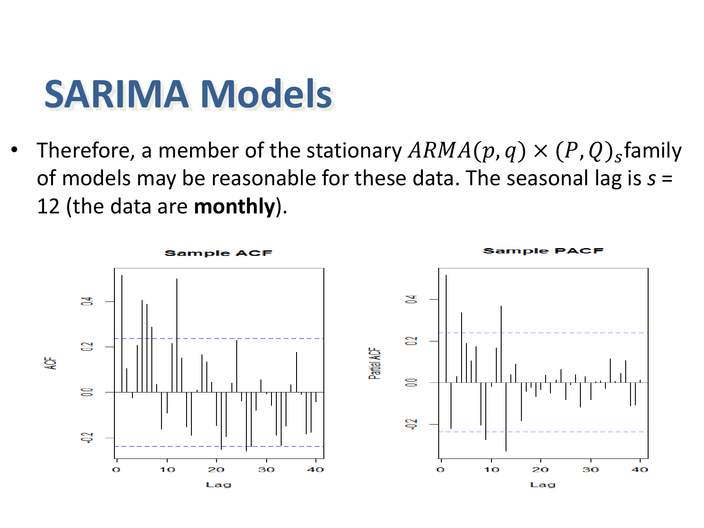
เพราะระดับเฉลี่ยคงที่ จึงใช้ ARMA(p,q)×(P,Q)ₛ ที่นิ่ง (ไม่มี d, D) และ s = 12 เพราะเป็นข้อมูลรายเดือน
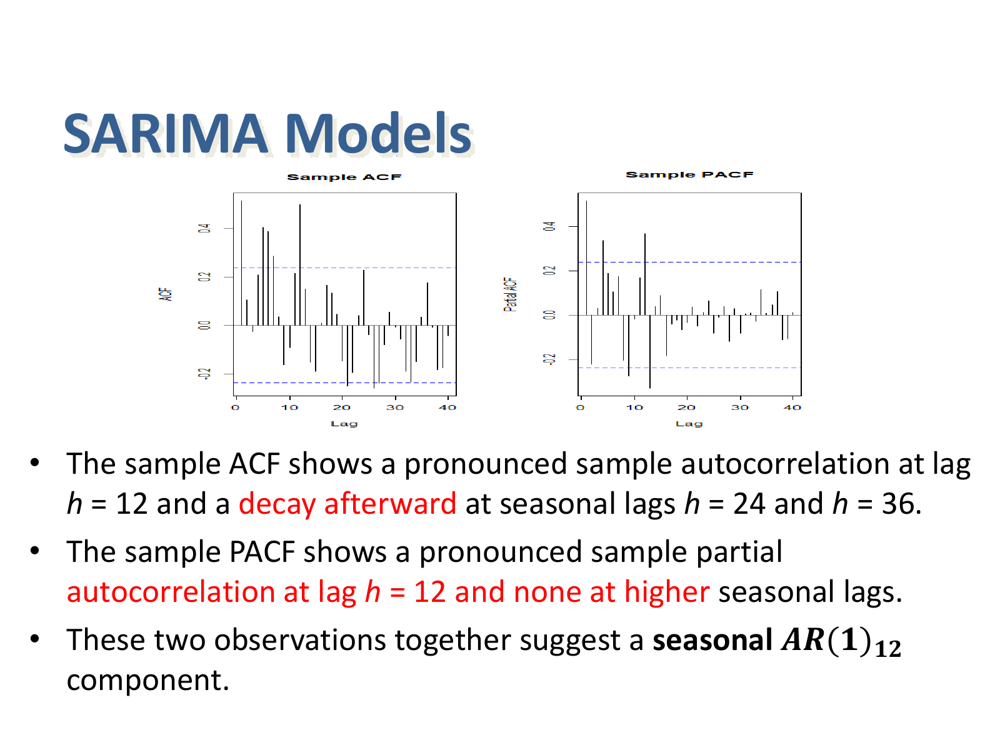
sample ACF ที่ lag 12, 24, 36 คือ 0.500, 0.229, 0.177 "ลงช้า ๆ" ส่วน sample PACF ที่ lag 12 คือ 0.368 และที่ lag 24 เหลือ 0.064 เส้นประคือ 2/√68 = 0.243 จึงทะลุที่ lag 12 เท่านั้น ACF tail off ตาม seasonal lag กับ PACF ตัดหลัง lag 12 คือรูปแบบของ AR(1)₁₂ ตามตารางในหัวข้อ 4 (Class 9-2, 0:07:58–0:10:39)
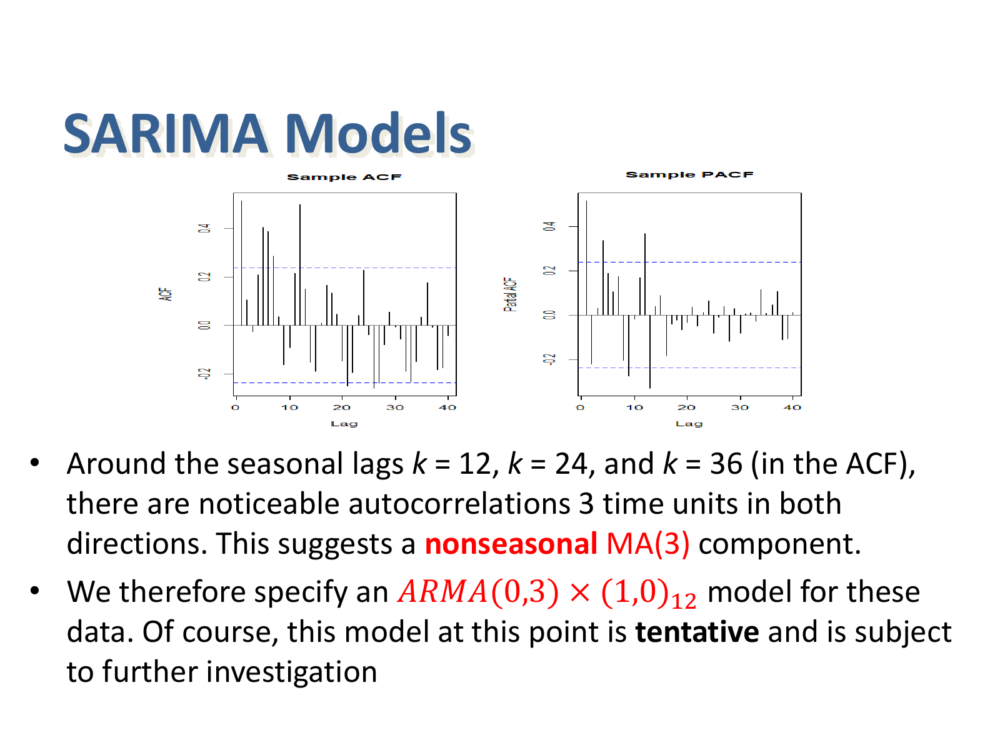
รอบ lag 12, 24, 36 ใน ACF มี autocorrelation 3 time units in both directions คือที่ lag 9–15 ก็ยังมีค่า ซึ่งเป็น "ตะเกียบ" แบบหัวข้อ 5 ที่กว้างสามช่อง และ ACF ช่วงต้นคือ 0.517, 0.106 สไลด์จึงเสนอ non-seasonal MA(3) ได้โมเดล ARMA(0,3)×(1,0)₁₂ "เพราะดูมันไม่ค่อยมี trend" ไม่ต้อง difference (Class 9-2, 0:10:39) สไลด์ย้ำว่าโมเดลนี้ tentative
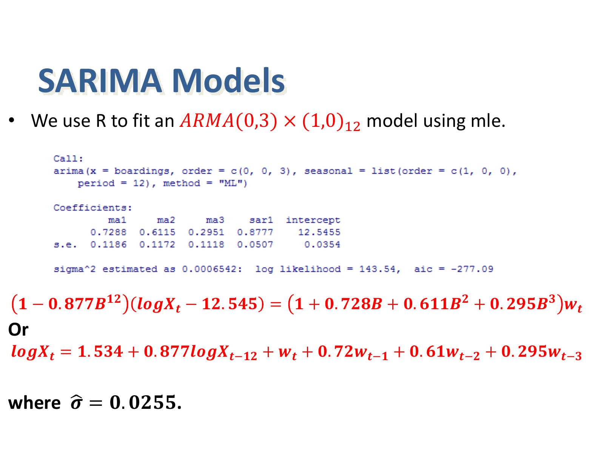
สไลด์แสดงทั้ง output และสมการสองรูปแบบ ทุกค่าในสมการมาจาก output โดยตรง ขั้นการแปลงอยู่ในกล่องข้างล่าง
arima(boardings, order = c(0,0,3), seasonal = list(order = c(1,0,0), period = 12), method = "ML"): ma1 = 0.7288, ma2 = 0.6115, ma3 = 0.2951, sar1 = 0.8777, intercept = 12.5455, σ² = 0.0006542
อาจารย์เขียนสีแดง "sar1 = Φ" และแก้ตัวเองในคลิป "ไม่ใช่ Theta ใหญ่ เป็น Phi ใหญ่" (0:11:03)
\((1-0.877B^{12})(\log X_t-12.545)=(1+0.728B+0.611B^2+0.295B^3)w_t\)
ค่าคงที่ \(12.5455(1-0.8777)=1.534\) จึงได้ \(\log X_t=1.534+0.877\log X_{t-12}+w_t+0.72w_{t-1}+0.61w_{t-2}+0.295w_{t-3}\), \(\hat\sigma=\sqrt{0.0006542}=0.0255\)
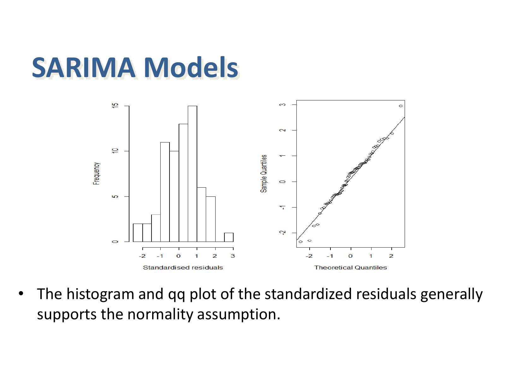
histogram ใกล้ระฆังคว่ำ และ QQ plot เรียงตามเส้น ยกเว้นปลายล่างสองจุด รันเองได้ Shapiro-Wilk p = 0.619 จึงยอมรับ normality
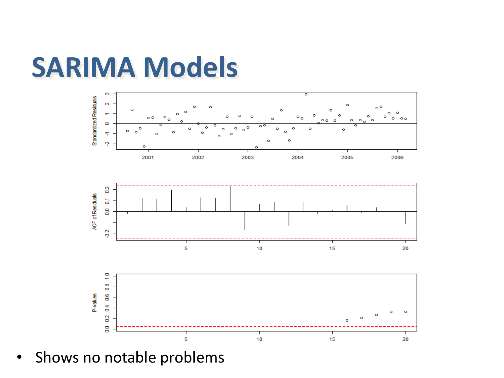
standardized residual อยู่ใน ±3 ACF ของ residual อยู่ในเส้นทุก lag และ p-value ของ Ljung-Box ในกราฟอยู่เหนือ 0.05 สไลด์และอาจารย์สรุปว่า "model appropriate" (Class 9-2, 0:13:21–0:14:21) ถ้าคำนวณ Box.test เองด้วย fitdf = 4 ที่ H = 10 ได้ p = 0.031 ต่ำกว่า 0.05 ส่วน H = 20 ได้ 0.321 ความต่างมาจากจำนวน df ที่หักและ lag ที่เลือก ข้อมูล 68 ค่ากับพารามิเตอร์ 5 ตัวทำให้ผลไวต่อการตั้งค่า ในการรายงานควรระบุว่าใช้ H และ df เท่าใด
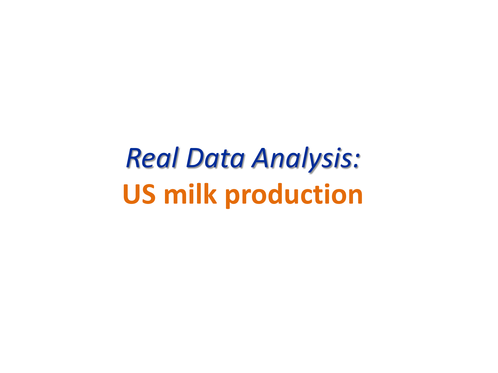
ชุดที่สองต้องใช้ทั้ง d และ D จึงเป็น SARIMA เต็มรูปแบบ
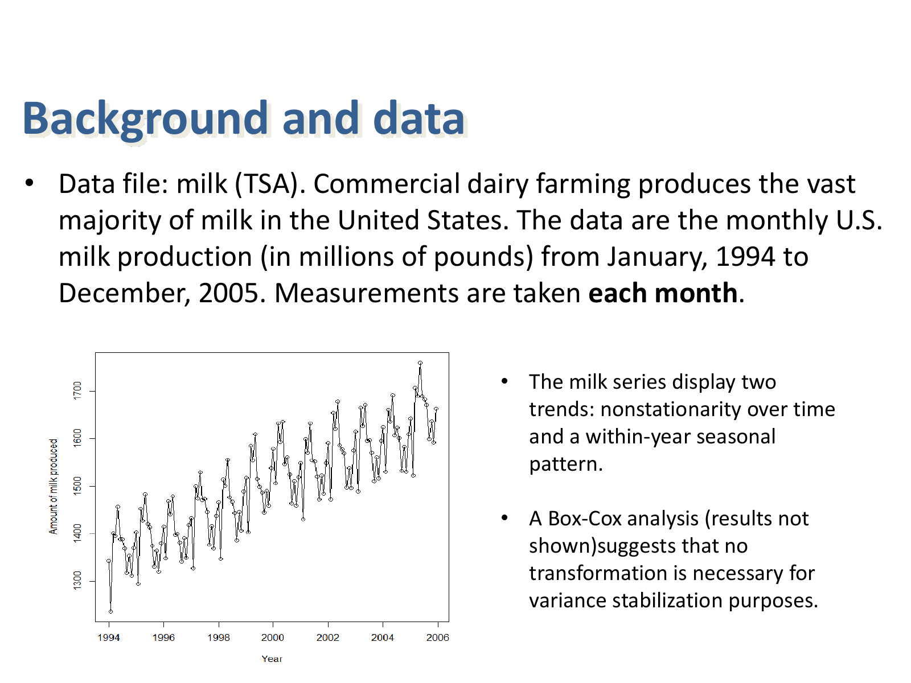
milk คือผลผลิตนมรายเดือนของสหรัฐฯ (ล้านปอนด์) มกราคม 1994 ถึงธันวาคม 2005 รวม 144 เดือน มี trend ขาขึ้นและ seasonal ภายในปี Box-Cox บอกว่าไม่ต้องแปลง "ไม่ต้อง take log เพราะมันแกว่งเท่า ๆ กัน" (Class 9-2, 0:18:19)
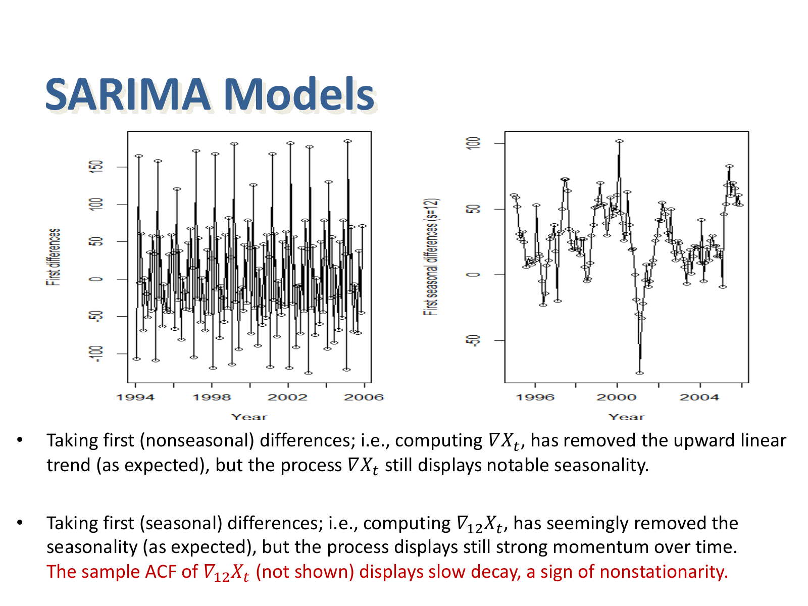
ผลต่างธรรมดา \(\nabla X_t\) ตัด trend ได้ แต่ยังเห็น seasonal ชัด ส่วนผลต่าง seasonal \(\nabla_{12}X_t\) ตัด seasonal ได้ แต่ยังเดินเป็นช่วงยาว ACF ของ \(\nabla_{12}X_t\) คือ 0.761, 0.599, 0.443 ลดช้า เป็นสัญญาณไม่นิ่ง จึงต้องใช้ทั้งสองอย่าง
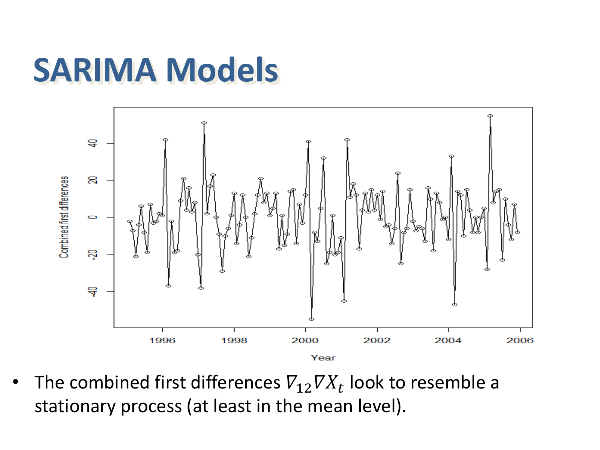
\(\nabla\nabla_{12}X_t=(1-B)(1-B^{12})X_t\) แกว่งรอบศูนย์ "ดูดีมากขึ้น" จึงใช้ d = 1, D = 1 (Class 9-2, 0:20:10) ลำดับการ difference "สามารถสลับ order กันได้" (Class 9-2, 0:29:30) เพราะการคูณพหุนามสลับที่ได้ อาจารย์ย้ำว่าวิธีดูกราฟเป็น "subjective approach" ของสมัยก่อน ปัจจุบันใช้ auto.arima แนะนำ d, D (Class 9-2, 0:20:42)
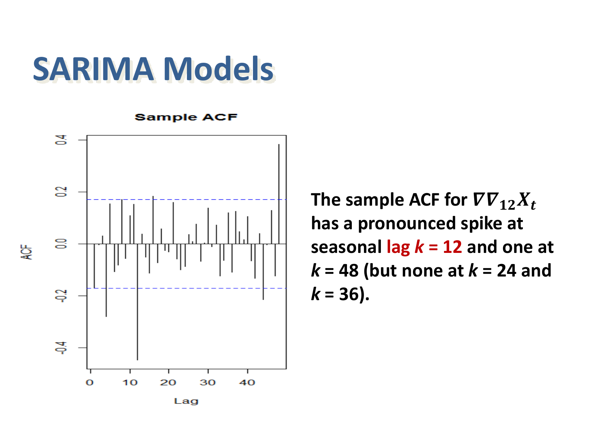
ACF มีแท่งใหญ่ที่ lag 12 (−0.448) และ lag 48 (0.385) แต่ lag 24, 36 เล็ก (−0.087, −0.109) เส้นประคือ 2/√131 = 0.175 ถ้า "ignore lag 48" จะเป็น MA(1)₁₂ (Class 9-2, 0:21:03)
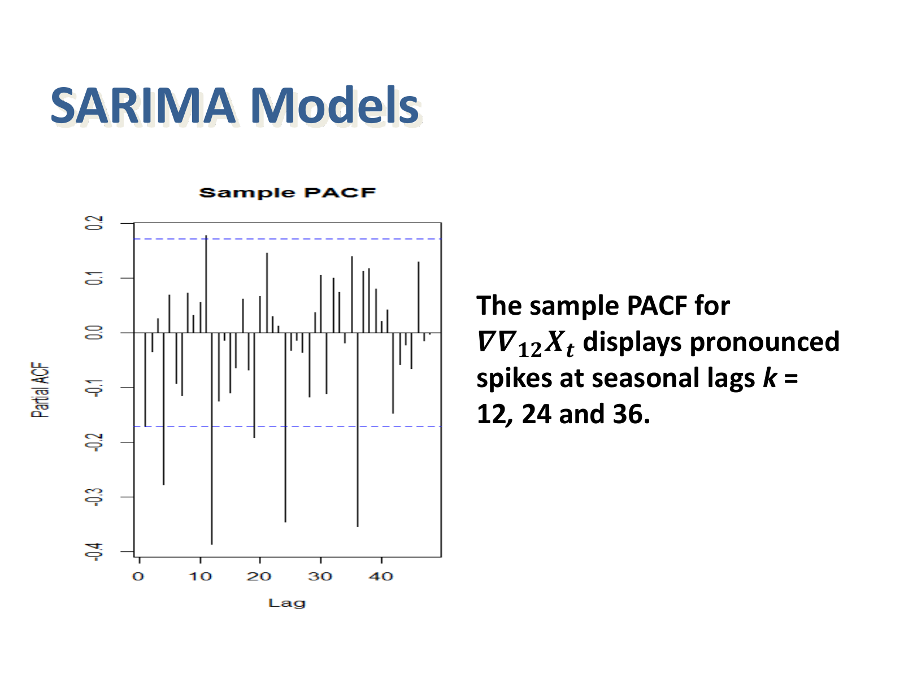
PACF ที่ lag 12, 24, 36 คือ −0.387, −0.346, −0.354 ทะลุเส้นทั้งสาม และไม่ได้ลดลงชัด ถ้าเน้น PACF จะเป็น AR(3)₁₂ (P = 3) (Class 9-2, 0:24:29)
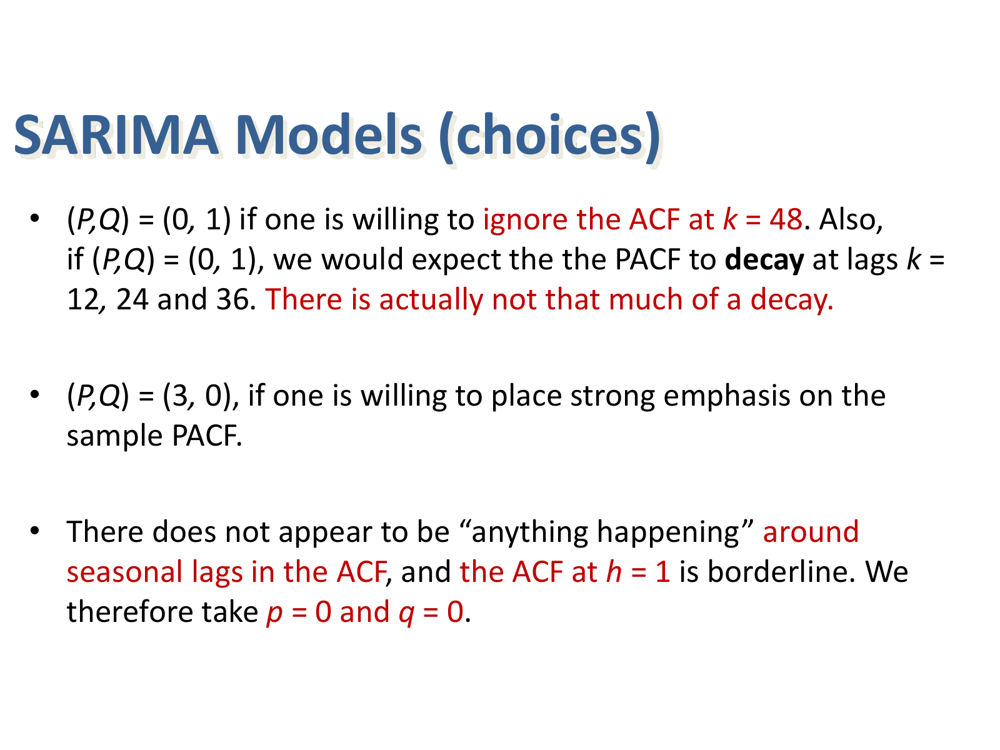
สไลด์ชั่งน้ำหนัก: (P,Q) = (0,1) ถ้ายอมมองข้าม ACF ที่ lag 48 แต่ถ้าเป็น MA(1)₁₂ จริง PACF ควรลดลงตาม lag 12, 24, 36 ซึ่ง "there is actually not that much of a decay" ส่วน (P,Q) = (3,0) ถ้าเน้น PACF รอบ seasonal lag ใน ACF ไม่มีตะเกียบ และ ACF ที่ lag 1 (−0.171) อยู่ใกล้เส้น จึงใช้ p = q = 0
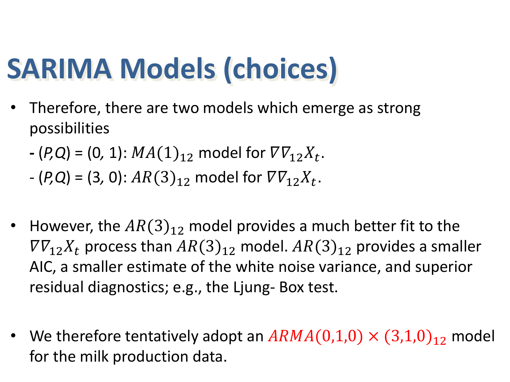
"เวลาทำจริง ๆ ควรจะลองทั้งสองโมเดล" (Class 9-2, 0:24:55) สไลด์สรุปว่า AR(3)₁₂ ให้ AIC เล็กกว่า σ² เล็กกว่า และ diagnostic ดีกว่า (สไลด์พิมพ์ผิดเป็น "AR(3)₁₂ ... than AR(3)₁₂" ควรเป็น "than MA(1)₁₂") ตรวจด้วย R: ARIMA(0,1,0)×(3,1,0)₁₂ ได้ σ² = 121.4, aic = 1032.05 และ Ljung-Box p ที่ H = 12, 24, 30 = 0.165, 0.268, 0.297 ส่วน ARIMA(0,1,0)×(0,1,1)₁₂ ได้ sma1 = −0.954, σ² = 152.0, aic = 1058.13 และ Ljung-Box p = 0.003, 0.024, 0.090 ไม่ผ่าน จึงเลือก ARIMA(0,1,0)×(3,1,0)₁₂
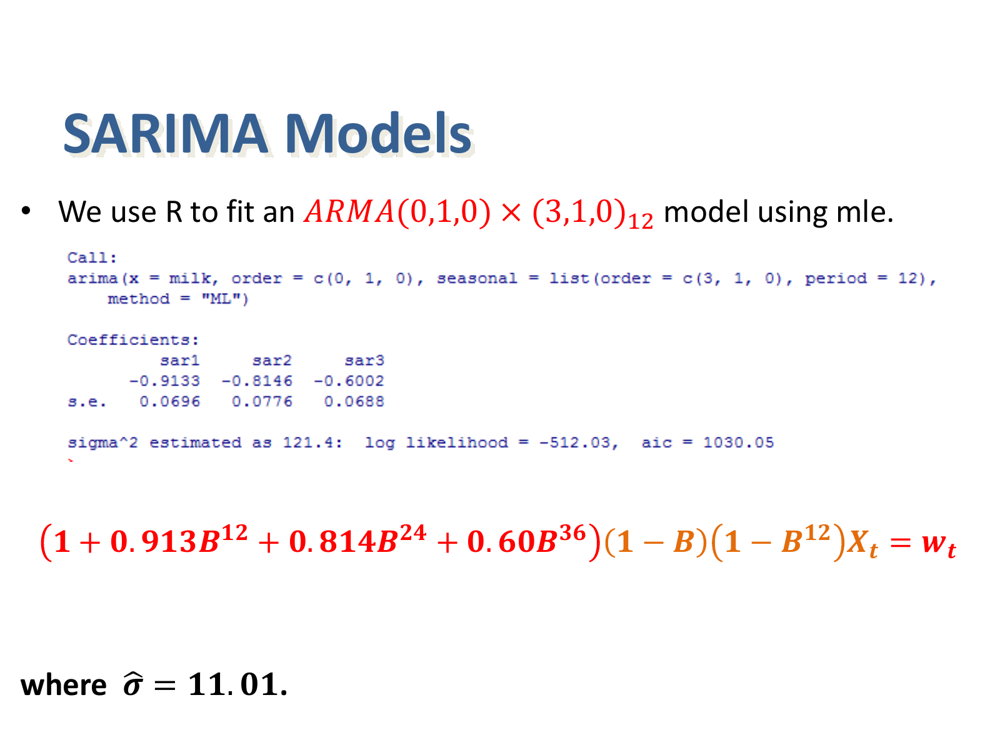
sar ทั้งสามตัวติดลบ จุดที่ต้องระวังที่สุดคือเครื่องหมายเมื่อนำเข้า seasonal AR operator
sar1 = −0.9133, sar2 = −0.8146, sar3 = −0.6002, σ² = 121.4 ไม่มี intercept เพราะ d, D > 0
\(1-\Phi_1B^{12}-\Phi_2B^{24}-\Phi_3B^{36}=1-(-0.913)B^{12}-(-0.814)B^{24}-(-0.600)B^{36}\) "ต้องเป็นลบ Φ ใหญ่ ... มันกลายเป็นบวกทุกอันเลย"
\((1+0.913B^{12}+0.814B^{24}+0.60B^{36})(1-B)(1-B^{12})X_t=w_t\), \(\hat\sigma=\sqrt{121.4}=11.01\)
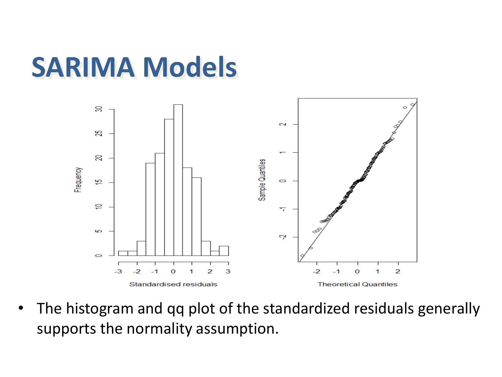
histogram และ QQ plot สนับสนุน normality (Shapiro p = 0.767 หลังตัด 13 ค่าแรกที่ใช้เริ่มต้น difference) tsdiag ใช้ omit.initial = T เพื่อตัด residual ช่วงต้นที่คำนวณได้ไม่สมบูรณ์ standardized residual อยู่ใน ±3 และ p-value ของ Ljung-Box ทุกจุดเกิน 0.05 "H0 คือ model appropriate หรือ data เป็น random" (Class 9-2, 0:28:20–0:31:02) ข้อสังเกตจากการรันเพิ่ม: auto.arima(milk) เลือก ARIMA(1,0,0)(2,1,2)[12] with drift ซึ่งใช้ d = 0 ต่างจากที่เลือกด้วยตา โมเดลที่ใช้ d ต่างกันเทียบ AIC กันตรง ๆ ไม่ได้ เพราะ likelihood คำนวณบนข้อมูลคนละชุด ต้องเทียบด้วยความแม่นยำของการพยากรณ์ (Lesson 10)
โค้ดส่วน seasonal อยู่ท้าย R_codes.txt ในโฟลเดอร์ CLASS 8 ข้อมูล boardings และ milk อยู่ใน package TSA ควิซ 7 อยู่ในโฟลเดอร์ CLASS 9
ρ₁ = 0 (lag ที่ไม่ใช่พหุคูณของ 12 เป็นศูนย์)
\(\rho_{12}=\dfrac{0.5+0.5(0.4)}{1+0.25+0.16}=\dfrac{0.7}{1.41}=0.496\), \(\rho_{24}=\dfrac{0.4}{1.41}=0.284\), ρ₃₆ = 0
PACF tail off ที่ lag 12, 24, 36, 48, … (เหมือน PACF ของ MA(2) แต่ย้ายไปที่พหุคูณของ 12) ตรวจด้วย ARMAacf(ma = c(rep(0,11), 0.5, rep(0,11), 0.4), lag.max = 36)
\(X_t=w_t+\theta w_{t-1}+\Theta w_{t-12}+\theta\Theta w_{t-13}\) γ₀ = σ²(1 + θ² + Θ² + θ²Θ²) = σ²(1 + θ²)(1 + Θ²)
γ₁ = σ²(θ + Θ·θΘ) = σ²θ(1 + Θ²), γ₁₁ = σ²θΘ, γ₁₂ = σ²(Θ + θ·θΘ) = σ²Θ(1 + θ²), γ₁₃ = σ²θΘ lag อื่นเป็น 0
ρ₁ = θ/(1 + θ²), ρ₁₂ = Θ/(1 + Θ²), ρ₁₁ = ρ₁₃ = θΘ/((1 + θ²)(1 + Θ²)) เท่ากันเพราะทั้งสองมาจากผลคูณสัมประสิทธิ์คู่เดียว θ กับ Θ (lag 11 คือ θ ที่ตำแหน่ง 1 กับ Θ ที่ 12, lag 13 คือ 1 ที่ตำแหน่ง 0 กับ θΘ ที่ 13)
\((1-\phi B)(1-\Phi B^{12})X_t=w_t\) กระจาย \((1-\phi B-\Phi B^{12}+\phi\Phi B^{13})X_t=w_t\)
\(X_t=\phi X_{t-1}+\Phi X_{t-12}-\phi\Phi X_{t-13}+w_t\) เป็น AR(13) ที่มีแค่ lag 1, 12, 13 PACF จึงไม่เป็นศูนย์ได้ถึง lag 13 แล้วเป็นศูนย์ (มีค่าเด่นที่ 1, 12, 13) ระวังเครื่องหมายของพจน์ φΦ
(1) AR(2)₃: ACF ไม่เป็นศูนย์เฉพาะ lag 3, 6, 9, … และ tail off lag อื่นเป็นศูนย์ PACF ไม่เป็นศูนย์ที่ lag 3, 6 แล้วเป็นศูนย์
(2) AR(5)₂: ACF tail off ที่ lag 2, 4, 6, … PACF ไม่เป็นศูนย์ที่ lag 2, 4, 6, 8, 10 แล้วเป็นศูนย์ lag คี่เป็นศูนย์ทั้งหมด
(3) MA(2)₄: ACF ไม่เป็นศูนย์ที่ lag 4, 8 แล้วเป็นศูนย์ PACF tail off ที่ lag 4, 8, 12, …
(4) MA(4)₂: ACF ไม่เป็นศูนย์ที่ lag 2, 4, 6, 8 แล้วเป็นศูนย์ PACF tail off ที่ lag 2, 4, 6, 8, 10, …
output ของ arima(y, order = c(0,1,1), seasonal = list(order = c(1,1,0), period = 12)) ได้ ma1 = −0.35 และ sar1 = −0.50 โมเดลที่เขียนถูกคือข้อใด
หลังทำ \(\nabla\nabla_{12}X_t\) ได้ผลนี้ (เส้นประ ±0.18) ควรเลือกส่วน seasonal แบบใด
lag 12 24 36 48 ACF -0.45 -0.02 0.03 -0.01 PACF -0.42 -0.25 -0.17 -0.11 ACF/PACF ที่ lag อื่นอยู่ในเส้นทั้งหมด
เขียนโมเดลจาก output ของ boardings ทั้งรูป B และรูปกระจาย พร้อม σ̂
ma1 ma2 ma3 sar1 intercept
0.7288 0.6115 0.2951 0.8777 12.5455
sigma^2 estimated as 0.0006542\((1-0.8777B^{12})(\log X_t-12.5455)=(1+0.7288B+0.6115B^2+0.2951B^3)w_t\)
ค่าคงที่ = 12.5455(1 − 0.8777) = 1.534 จึงได้ \(\log X_t=1.534+0.8777\log X_{t-12}+w_t+0.7288w_{t-1}+0.6115w_{t-2}+0.2951w_{t-3}\), σ̂ = √0.0006542 = 0.0256 (สไลด์ปัดเป็น 0.0255)
รันโค้ดนี้แล้วเทียบกับสูตร
round(ARMAacf(ma = c(-0.5, rep(0,10), -0.9, 0.45), lag.max = 13)[c(2,12,13,14)], 3)
round(ARMAacf(ar = c(rep(0,11), 0.9), ma = -0.5, lag.max = 25)[c(2,12,13,14,24,25,26)], 3)
round(ARMAacf(ar = c(rep(0,11), 0.8), lag.max = 48, pacf = TRUE)[c(12,24)], 3)lag 1, 11, 12, 13: -0.400 0.199 -0.497 0.199 lag 1, 11, 12, 13, 23, 24, 25: -0.400 -0.360 0.900 -0.360 -0.324 0.810 -0.324 PACF lag 12, 24 ของ AR(1)_12: 0.800 0.000
ARMAacf คืนค่าเริ่มที่ lag 0 จึงต้องบวก 1 ที่ตำแหน่ง (lag 1 อยู่ตำแหน่ง 2) ส่วน pacf = TRUE เริ่มที่ lag 1 ทุกค่าตรงกับสูตรในหัวข้อ 2–5
รันส่วน US milk ของ R_codes แล้วเทียบสองโมเดล
library(TSA); data(milk)
f1 <- arima(milk, order = c(0,1,0), seasonal = list(order = c(3,1,0), period = 12), method = "ML")
f2 <- arima(milk, order = c(0,1,0), seasonal = list(order = c(0,1,1), period = 12), method = "ML")
f1; f2; AIC(f1); AIC(f2)
Box.test(residuals(f2)[-(1:13)], lag = 12, type = "Ljung", fitdf = 1)f1: sar1 -0.9133 sar2 -0.8146 sar3 -0.6002 sigma^2 121.4 AIC() 1032.05 f2: sma1 -0.9541 sigma^2 152.0 AIC() 1058.13 Ljung-Box f2 (lag 12): p-value = 0.003
f1 ดีกว่าทั้ง AIC, σ² และ Ljung-Box ตรงกับสไลด์ aic ที่พิมพ์ในตัว output จะต่ำกว่า AIC() 2 หน่วยเพราะโหลด TSA (1030.05 บนสไลด์)
บทถัดไป: Lesson 10 — auto.arima, ETS และ tsCV
| หน้า | เนื้อหา | สอนที่ |
|---|---|---|
| 1–13 | Forecasting | etc — สอนใน Lesson 8 |
| 14–16 | ทำไมต้องมี seasonal ARIMA | หัวข้อ 1 |
| 17–21 | MA(Q)ₛ | หัวข้อ 2 |
| 22–26 | AR(P)ₛ | หัวข้อ 3 |
| 27–29 | ARMA(P,Q)ₛ และตาราง | หัวข้อ 4 |
| 30–32 | Multiplicative seasonal ARMA | หัวข้อ 5 |
| 33–41 | Denver boardings | หัวข้อ 7 |
| 42–51 | US milk production | หัวข้อ 8 |
| 52 | สรุป ARMA(P,Q)ₛ | หัวข้อ 4 |
| แหล่ง | ช่วงที่ใช้ | หัวข้อ |
|---|---|---|
| Class 8 | 1:24–2:13 seasonal MA/AR เขียนมือ | 2–4 |
| Class 9-1 | ทั้งคลิป (full model, ตาราง, multiplicative) | 2–6 |
| Class 9-2 | 0:00–0:31 simulation, boardings, milk | 5, 7, 8 |
| R_codes.txt (CLASS 8), quiz_7.pdf (CLASS 9), TSA: boardings, milk | ส่วน seasonal | 2–9 |